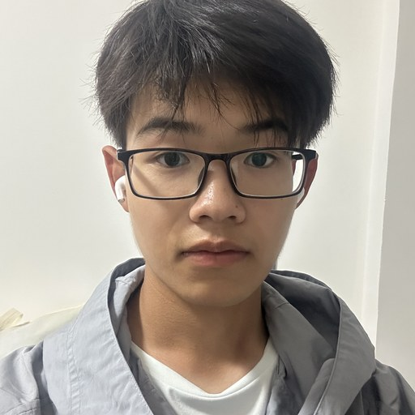
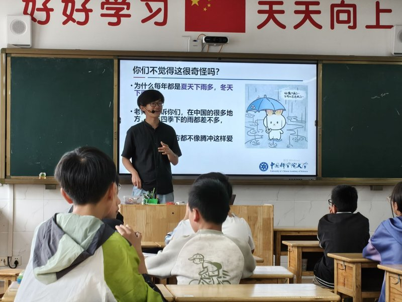
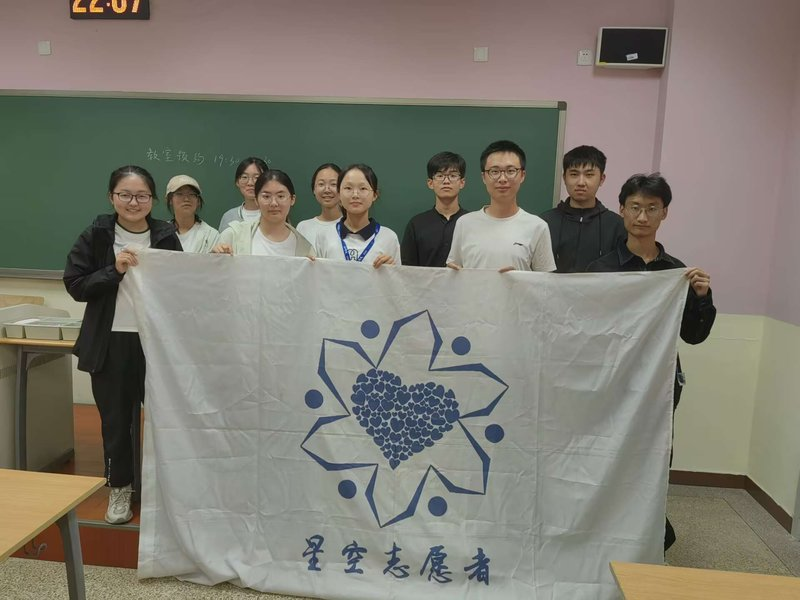

01About
I am a third-year undergraduate student in the Department of Computer Science and Technology at the University of Chinese Academy of Sciences (UCAS), Beijing.
I am passionate about Physical AI — pushing the boundary of intelligent agents into the physical world, so that they can learn and interact in real environments. To work toward this goal, I am building my foundations in deep learning, large language models, embodied intelligence, and reinforcement learning.
I am actively seeking an undergraduate research internship in world models or embodied AI. If you think I could be a fit for your team, please get in touch.
02Research Interests
World Models
Learning predictive models of the environment, so agents can imagine futures, plan, and learn from simulated experience.
AI Accelerators
Hardware architectures and systems that make training and inference of large-scale models faster and more efficient.
Physical AI
Grounding agents in the real world — perception, decision-making, and control in physical environments.
03Project
RISC-V Five-Stage Pipelined CPU Core
- 32-bit RISC-V CPU core built on a classic five-stage pipeline (IF / ID / EX / MEM / WB)
- Split L1 instruction and data caches to reduce average memory-access latency
- Data forwarding to resolve data hazards without pipeline stalls
- Dynamic branch prediction with a branch target buffer (BTB) and branch history table (BHT)
- DMA engine with FIFO buffering, driven by a RISC-V interrupt handler written in assembly
04Awards
- 2026 National Scholarship · Ministry of Education of China
- 2025 First Prize, China University Debating Championship (CUDC)
- 2025 First Prize, Chinese Mathematics Competitions (CMC) — Non-Mathematics Majors, Class A
- 2025 National Scholarship · Ministry of Education of China
05Activities & Interests

Volunteer Teacher, Xingkong Program (星空计划)
Summer teaching outreach with the Xingkong Program.

President, Starry Sky Volunteers Association (星空志愿者协会)
Led the Starry Sky Volunteers Association at UCAS.
Rational Investing & Financial-Markets Research
A self-directed practice I have kept up since my first year.
06Contact
The best way to reach me is by email. I am based in Beijing.